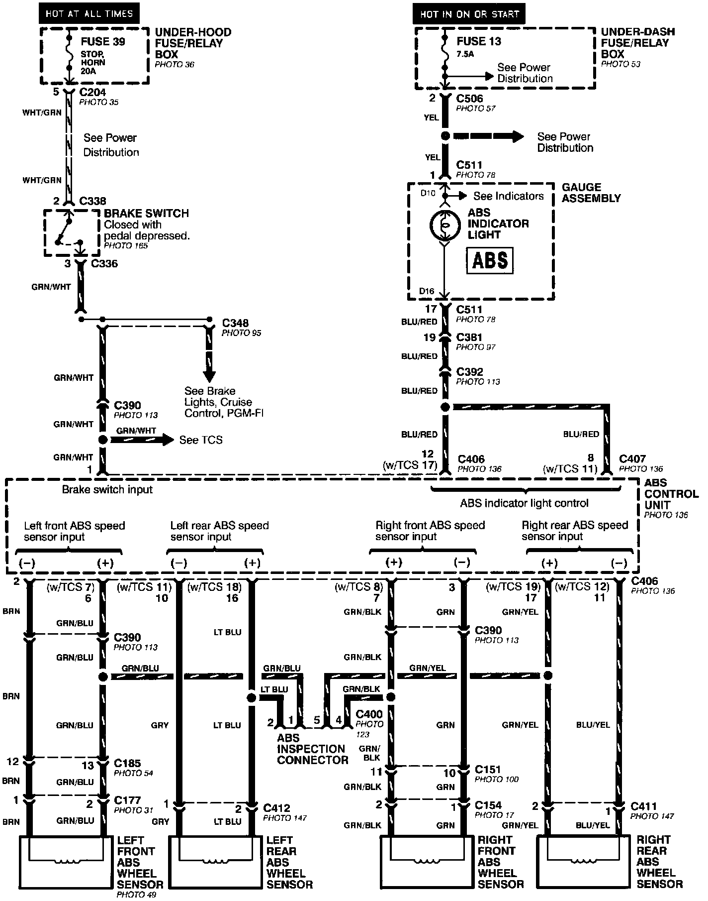
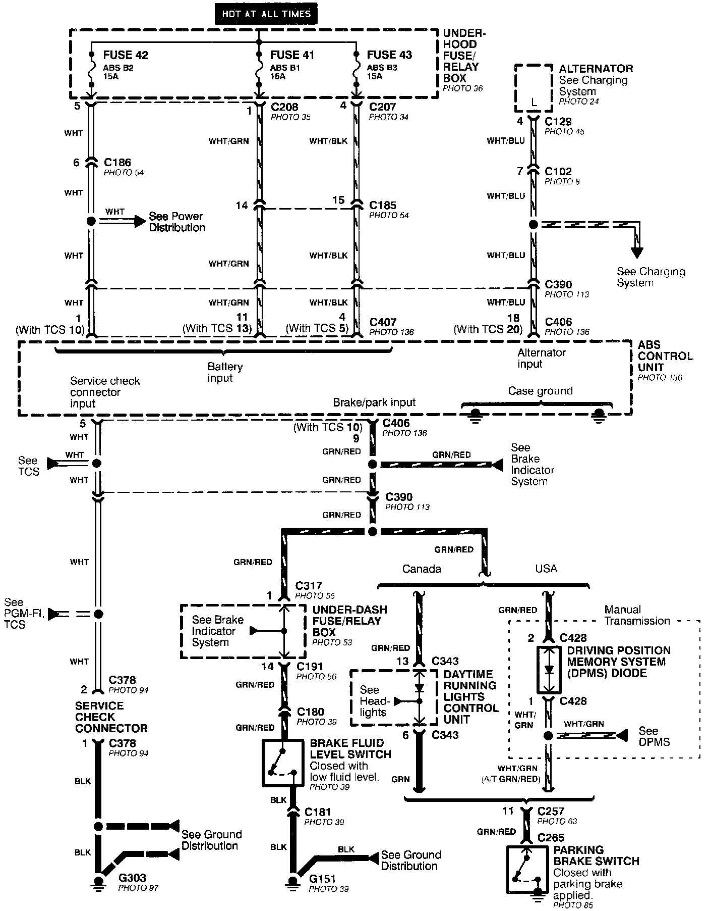
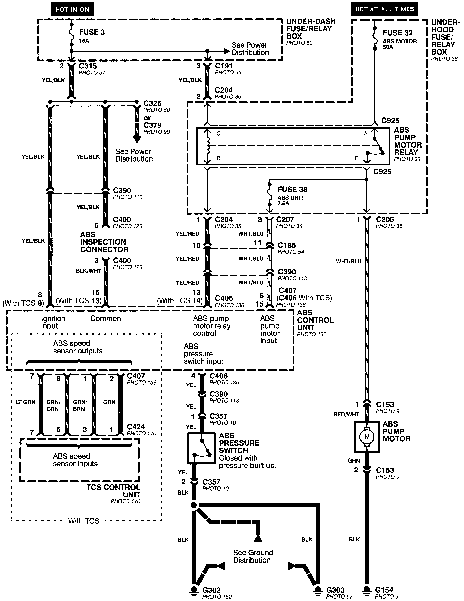
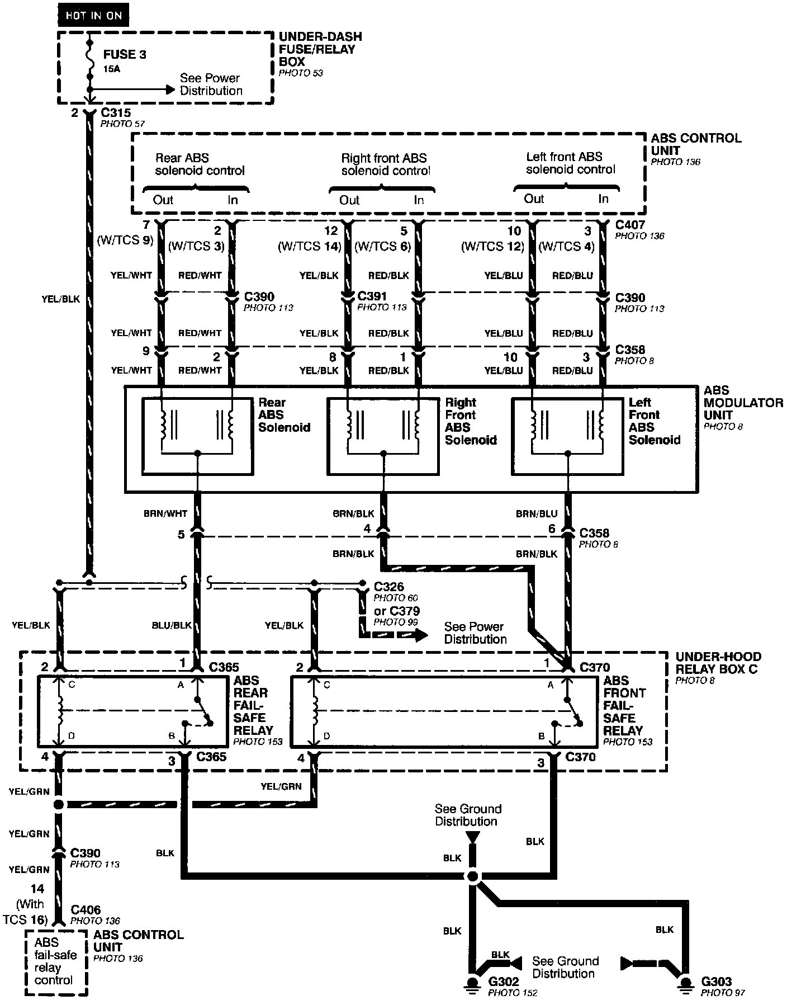

Anti-Lock Brake System (ABS)
Anti-lock Brake System (ABS)- Brake Switch, Indicator, and Wheel Speed Sensor Inputs:

Anti-lock Brake System (ABS)- Power, Brake Fluid Switch, and parking Brake Switch Inputs:

Anti-lock Brake System (ABS)- Motor, Pressure Switch, And Ignition Inputs:

Anti-lock Brake System (ABS)- Modulator Solenoids And Fail-safe Relays:
